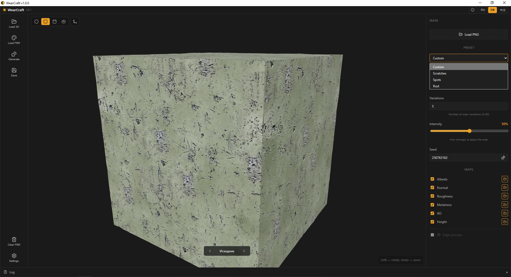
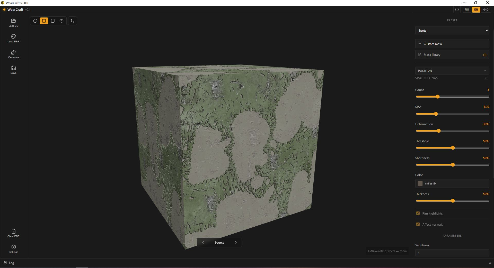

Внизу окна — панель лога: свёрнутая показывает последнюю строку, клик по хедеру разворачивает историю.
3. Загрузка PBR
Загрузить PBR-карты можно тремя способами:
Кнопка Загрузить PBR в панели слева
Хоткей Ctrl+O
Перетащить файлы или папку прямо в окно превью
Приложение само распознаёт карты по имени файла:
*_albedo.png / *_basecolor.png / *_diffuse.png
*_normal.png / *_nrm.png
*_roughness.png / *_rough.png
*_ao.png / *_occlusion.png
*_height.png / *_displacement.png
*_metalness.png / *_metallic.png
*_edge.png (опционально — карта краёв от предыдущих проходов)
Рис. 3 — PBR-карты загружены. Галочки показывают, какие карты участвуют в генерации.
Совет. Снимай галочки с карт, которые не хочешь трогать — они останутся без изменений в финале.
4. Пресеты
WearCraft имеет четыре пресета. Переключение — дропдаун Preset в правой панели.

Рис. 4 — Список пресетов: Custom, Scratches, Spots, Rust.
Custom — накладывает одну маску поверх PBR-сета. Работает только с albedo/roughness/normal.
Scratches — процедурные царапины Безье. Форма генерится математически, без масок.
Spots — пятна через маски (своя или из библиотеки).
Rust — ржавчина через маски. Похож на Spots, но с другим набором цветов и параметром Volume.
5. Scratches
Процедурные царапины — рисуются алгоритмом Безье, без масок. Параметры:
Рис. 5 — Пресет Scratches со всеми параметрами.
Density — количество царапин
Length — средняя длина
Thickness — толщина в пикселях
Waviness — искривление
Branches — вероятность ветвления
Clusters — группировка царапин в кластеры
Realistic — реалистичный разброс толщины и обрывов
Rim highlight — светлая кромка вокруг царапин
Normal enabled — влияние на карту normal
Depth — глубина (сила влияния на normal)
Совет. Уменьшай Density и Length для мелких царапин, увеличивай Clusters для концентрированных групп.
6. Spots
Пятна через маски. Маска может быть своя (один PNG) или из библиотеки (набор масок из папки AppData).

Рис. 6 — Пресет Spots: кнопки «Add user mask» и «Library», параметры пятен.
Параметры пятен
Position — раскрывающаяся секция: Position X/Y, Rotation, Random rotation
Count — количество пятен (1–8)
Scale — размер пятен
Deform — искажение формы пятна (рваные края)
Threshold — порог (какая часть маски становится пятном)
Sharpness — резкость краёв
Color — цвет пятна
Thickness — влияние на карту normal (объём)
Rim highlight — светлая кромка
Normal enabled — влиять на карту normal
Своя маска
Рис. 7 — Своя маска + раскрытая секция Position.
Кнопка + Add user mask → выбери PNG. Своя маска перебивает библиотеку — если она загружена, галочки из библиотеки игнорируются.
После загрузки появляется кнопка Position. Внутри:
Position X / Y — сдвиг пятна по UV (-1..1)
Rotation — поворот (0..360°)
Scale — размер (0.05..5.0, точная регулировка)
Reset — сбросить всё в дефолт
Совет. Пока ты в исходнике (вариация 0) — Position работает как превью. Нажми Generate — вариация 1 запомнит точную позицию, вариации 2..N сгенерятся случайно с тем же Count и Scale.
Библиотека масок
Кнопка Library → модалка со списком масок из %APPDATA%/WearCraft/masks/spots/. Отметь галочками нужные.
Select all — отметить все
Clear — снять все галочки
Open folder — открыть папку масок в проводнике (можно кидать свои PNG)
Важно. Пустой список галочек = ничего не применяется. Это сделано специально, чтобы случайно не применить все маски.
Position (для библиотеки)
Когда галочки из библиотеки активны (а своя маска не загружена) — есть кнопка Position над заголовком настроек Spots. Внутри:
Position X / Y — глобальный сдвиг всех пятен
Rotation — глобальный поворот
Random rotation — если включён, каждое пятно крутится ещё и случайно
7. Rust
Ржавчина работает через маски — по той же схеме, что Spots. Отличия:
Вместо Thickness — Volume (объём ржавчины, может быть отрицательным)
Вместо Color — три фиксированных цвета: ядро (тёмно-коричневый), тело (коричневый), край (светло-оранжевый)
Все остальные параметры (Count, Scale, Deform, Threshold, Sharpness, Position, Random rotation, Rim highlight, Normal enabled) — идентичны Spots.
Маски для Rust хранятся в %APPDATA%/WearCraft/masks/rust/ — отдельно от Spots.
8. Маски
Формат
Маска — PNG или JPG. Читается два канала: RGB-яркость и альфа. Приложение само определяет, какой канал использовать:
Если alpha сильно варьируется — берётся альфа
Иначе — RGB-яркость (усреднённая)
Результат всегда приводится к чёрно-белой карте: белое = пятно, чёрное = фон.
Хранение
Все маски лежат в %APPDATA%/WearCraft/masks/:
spots/ — для пресета Spots
rust/ — для пресета Rust
При первом запуске встроенные маски копируются из ресурсов приложения в эту папку. Дальше можно кидать свои — они появятся в библиотеке.
Своя маска vs библиотека
Своя маска (Add user mask) — одна, приоритетная, перебивает всё
Библиотека (галочки) — берётся только отмеченное. Пусто = ничего
Своя маска не использует тайлинг — пятно не размножается при уменьшении Scale
Библиотека использует тайлинг — пятна оборачиваются по краям текстуры
9. Custom Mask
Секция Mask в самом верху панели параметров. Работает только с пресетом Custom.
Накладывает одну маску прямо на albedo/roughness/normal, без процедурной генерации пятен. Параметры:
Position X / Y — сдвиг маски
Scale — размер (0.1..5.0)
Rotation — поворот (0..360°)
Opacity — прозрачность наложения
Color — цвет (только для mono-маски)
Affect albedo / roughness / normal — какие карты затронуть
Хоткей для загрузки — Ctrl+Shift+O.
Совет. Custom — самый простой способ наложить логотип или декаль на albedo.
10. Параметры и вариации
Variations — сколько вариаций сгенерировать (5–50)
Amount — сила износа (0–100%). Влияет на все пресеты, кроме Rust — там Amount фиксирован
Каждая вариация использует seed = params.seed + i * 7919, где i — номер вариации (1..N). Это гарантирует, что все вариации разные, но при том же seed результат воспроизводим.
11. Тайлинг и превью
Панель Tiling
Кнопка Tiling в левом верхнем углу превью:
Repeat X / Y — сколько раз текстура повторяется по каждой оси (0.1..10)
Rotation — поворот UV (-180°..180°)
Reset — вернуть Repeat X/Y = 1, Rotation = 0
Совет. Тайлинг в превью нужен только для оценки, как текстура ведёт себя на большой площади. В финале PBR-карты сохраняются один раз.
Навигация по вариациям
Внизу превью — стрелки ◀▶ и счётчик. Исходник — вариация 0, превью с шейдером. 1/5 — запечённые вариации.
Пока вариация 0 — вьюер показывает шейдерный preview (для Spots и Rust). Пока вариация 1..N — показывает реальный PNG из wear_NN/.
Рендер-качество
Превью рендерится с анизотропией 16x, SSAA ×2, AgX tone mapping. Сфера — 96×96 сегментов, тени PCF.
12. Сохранение и экспорт
Кнопка Сохранить или Ctrl+S. Секции:
PNG — сохранить текущий PBR-сет как PNG
ZIP — упаковать все вариации в архив
OBJ — экспорт геометрии модели (если загружена)
Engines — экспорт под игровые движки
Unreal Engine
Упаковка ORM: R = AO, G = Roughness, B = Metalness. Normal-карта конвертируется в DirectX (Y-флип зелёного канала). Сохраняется в подпапку unreal/ + README.txt с описанием.
Unity
MetallicSmoothness: R = Metal, G = AO, B = 0, A = Smoothness (1 − Roughness). Радио Built-in / URP — для URP сохраняется AO отдельной картой. Normal-карта Y-flip. Сохраняется в unity/ + README.txt.
Совет. Перед билдом в движок перепроверь галочки Normal enabled — если карта normal не менялась, флип не нужен.
13. Хоткеи
Клавиша
Действие
Ctrl+O
Загрузить PBR-карты
Ctrl+Shift+O
Загрузить кастомную маску (Custom preset)
Ctrl+G
Генерировать вариации
Ctrl+S
Сохранить
Esc
Закрыть активную модалку
14. Info и настройки
Info
Кнопка Info в хедере. Внутри — Help, About, Support, Manual.
Save Mode — ask (спрашивать путь каждый раз) или always (сохранять в фиксированную папку)
Save Dir — папка для режима always
Open masks folder — открыть %APPDATA%/WearCraft/masks/ в проводнике
Лог
Внизу окна — панель лога. Свёрнутая показывает последнюю строку, клик по хедеру разворачивает. Лог полезен при отладке: видно все сообщения от Rust и от JS.
15. Лицензия
WearCraft распространяется под MIT License — свободно для использования, в том числе в коммерческих проектах.
Сделано INV.LVL · 2026
WearCraft v1.0.0
Procedural wear generator for PBR textures — User Manual
1. Introduction
WearCraft is a desktop app for procedural wear generation of PBR textures. It takes a ready PBR set (albedo, normal, roughness, ao, height, metalness, edge) and generates N unique wear variations: scratches, spots, rust, custom masks.
The built-in 3D viewer shows the result in real time. The preview fully matches the baked result — what you see is what you get.
For: 3D artists, game devs, anyone working with PBR.
💡 Tip: click any screenshot to view it fullscreen. Esc or click the background — close.
2. Interface
The window is split into three parts: toolbar on the left, 3D preview in the center, parameters panel on the right.
Fig. 1 — Main window: toolbar, 3D preview, parameters panel.Fig. 2 — Custom 3D model loaded into the preview.
Left toolbar:
Load 3D — open a 3D model (.obj / .gltf)
Load PBR — open PBR maps
Generate — run variation generation
Save — export result
Reset PBR — clear loaded maps
Settings — app options
At the bottom — the log panel: collapsed shows the last line, clicking the header expands the history.
3. Loading PBR
Three ways to load PBR maps:
Load PBR button on the left toolbar
Hotkey Ctrl+O
Drag & drop files or a folder directly onto the preview
The app auto-detects maps by filename:
*_albedo.png / *_basecolor.png / *_diffuse.png
*_normal.png / *_nrm.png
*_roughness.png / *_rough.png
*_ao.png / *_occlusion.png
*_height.png / *_displacement.png
*_metalness.png / *_metallic.png
*_edge.png (optional — edge map from previous passes)
Fig. 3 — PBR maps loaded. Checkboxes show which maps participate in generation.
Tip. Uncheck maps you don't want to touch — they will stay unchanged in the result.
4. Presets
WearCraft has four presets. Switch via the Preset dropdown on the right panel.
Custom — applies a single mask over the PBR set. Works only with albedo/roughness/normal.
Scratches — procedural Bezier scratches. Generated mathematically, no masks.
Spots — spots via masks (own or library).
Rust — rust via masks. Similar to Spots, but with a different color set and a Volume parameter.
5. Scratches
Procedural scratches — drawn by Bezier, no masks. Parameters:
Fig. 5 — Scratches preset with all parameters.
Density — number of scratches
Length — average length
Thickness — thickness in pixels
Waviness — curvature
Branches — branch probability
Clusters — grouping scratches into clusters
Realistic — realistic thickness variation and breaks
Rim highlight — light rim around scratches
Normal enabled — affect the normal map
Depth — depth (strength of normal influence)
Tip. Lower Density and Length for fine scratches, increase Clusters for concentrated groups.
6. Spots
Spots via masks. The mask can be your own (a single PNG) or from the library (a set of masks from the AppData folder).
Fig. 6 — Spots preset: "Add user mask" and "Library" buttons, spot parameters.
Spot parameters
Position — expandable section: Position X/Y, Rotation, Random rotation
Count — number of spots (1–8)
Scale — spot size
Deform — shape distortion (torn edges)
Threshold — threshold (what part of the mask becomes a spot)
Sharpness — edge sharpness
Color — spot color
Thickness — normal map influence (volume)
Rim highlight — light rim
Normal enabled — affect the normal map
Own mask
Fig. 7 — Own mask + expanded Position section.
Click + Add user mask → pick a PNG. Own mask overrides the library — if loaded, library checkboxes are ignored.
Once loaded, the Position button appears. Inside:
Position X / Y — spot offset in UV (-1..1)
Rotation — rotation (0..360°)
Scale — size (0.05..5.0, fine control)
Reset — reset all to default
Tip. While you're on the source (variation 0) — Position acts as preview. Click Generate — variation 1 remembers the exact position, variations 2..N generate randomly with the same Count and Scale.
Masks library
Click Library → a modal with masks from %APPDATA%/WearCraft/masks/spots/. Check the ones you want.
Select all — check all
Clear — uncheck all
Open folder — open the masks folder in Explorer (drop your own PNGs)
Important. An empty checkbox list = nothing is applied. This is intentional to prevent accidentally applying all masks.
Position (for library)
When library masks are active (and no own mask is loaded) — there's a Position button above the Spots header. Inside:
Position X / Y — global offset for all spots
Rotation — global rotation
Random rotation — if on, each spot also rotates randomly
7. Rust
Rust works via masks — same scheme as Spots. Differences:
Instead of Thickness — Volume (rust volume, can be negative)
Instead of Color — three fixed colors: core (dark brown), body (brown), edge (light orange)
All other parameters (Count, Scale, Deform, Threshold, Sharpness, Position, Random rotation, Rim highlight, Normal enabled) are identical to Spots.
Rust masks are stored in %APPDATA%/WearCraft/masks/rust/ — separate from Spots.
8. Masks
Format
A mask is a PNG or JPG. Two channels are read: RGB luminance and alpha. The app auto-detects which one to use:
If alpha varies a lot — alpha is used
Otherwise — RGB luminance (averaged)
The result is always reduced to a black-and-white map: white = spot, black = background.
Storage
All masks live in %APPDATA%/WearCraft/masks/:
spots/ — for the Spots preset
rust/ — for the Rust preset
On first run, built-in masks are copied from app resources into this folder. After that you can drop your own — they'll appear in the library.
Own mask vs library
Own mask (Add user mask) — a single, priority mask that overrides everything
Library (checkboxes) — only what's checked. Empty = nothing
Own mask doesn't use tiling — the spot doesn't multiply when Scale decreases
Library uses tiling — spots wrap at texture edges
9. Custom Mask
The Mask section at the very top of the parameters panel. Works only with the Custom preset.
Overlays a single mask directly onto albedo/roughness/normal, without procedural spot generation. Parameters:
Position X / Y — mask offset
Scale — size (0.1..5.0)
Rotation — rotation (0..360°)
Opacity — overlay transparency
Color — color (mono masks only)
Affect albedo / roughness / normal — which maps to affect
Hotkey for loading — Ctrl+Shift+O.
Tip. Custom is the easiest way to overlay a logo or decal on albedo.
10. Parameters & Variations
Variations — how many variations to generate (5–50)
Amount — wear strength (0–100%). Affects all presets except Rust — there Amount is fixed
Seed — generator seed. Same seed + same settings = same result. Dice button — random seed
Each variation uses seed = params.seed + i * 7919, where i is the variation index (1..N). This guarantees all variations differ, yet the result is reproducible with the same seed.
11. Tiling & Preview
Tiling panel
The Tiling button in the top-left corner of the preview:
Repeat X / Y — how many times the texture repeats per axis (0.1..10)
Rotation — UV rotation (-180°..180°)
Reset — restore Repeat X/Y = 1, Rotation = 0
Tip. Tiling in preview is only for evaluating how the texture behaves over a large area. In the result, PBR maps are saved once.
Variation navigation
At the bottom of the preview — arrows ◀▶ and a counter. Source — variation 0, shader preview. 1/5 — baked variations.
While on variation 0 — the viewer shows the shader preview (for Spots and Rust). While on variation 1..N — shows the actual PNG from wear_NN/.
Render quality
Preview renders with 16x anisotropy, SSAA ×2, AgX tone mapping. Sphere — 96×96 segments, PCF shadows.
12. Saving & Engine Export
Click Save or Ctrl+S. Sections:
PNG — save the current PBR set as PNG
ZIP — pack all variations into an archive
OBJ — export model geometry (if loaded)
Engines — export for game engines
Unreal Engine
ORM packing: R = AO, G = Roughness, B = Metalness. Normal map is converted to DirectX (Y-flip of green channel). Saved to unreal/ subfolder + README.txt.
Unity
MetallicSmoothness: R = Metal, G = AO, B = 0, A = Smoothness (1 − Roughness). Radio Built-in / URP — for URP, AO is saved as a separate map. Normal map Y-flip. Saved to unity/ + README.txt.
Tip. Before building into an engine, double-check the Normal enabled checkboxes — if the normal map wasn't changed, no flip is needed.
13. Hotkeys
Key
Action
Ctrl+O
Load PBR maps
Ctrl+Shift+O
Load custom mask (Custom preset)
Ctrl+G
Generate variations
Ctrl+S
Save
Esc
Close active modal
14. Info & Settings
Info
The Info button in the header. Contains Help, About, Support, Manual.
Save Mode — ask (ask path every time) or always (save to a fixed folder)
Save Dir — folder for always mode
Open masks folder — open %APPDATA%/WearCraft/masks/ in Explorer
Log
At the bottom — the log panel. Collapsed shows the last line, clicking the header expands. The log is useful for debugging: you see all messages from Rust and JS.
15. License
WearCraft is released under the MIT License — free to use, including in commercial projects.
Made by INV.LVL · 2026
WearCraft v1.0.0
PBR 纹理程序化磨损生成器 — 用户手册
1. 简介
WearCraft 是一款用于 PBR 纹理程序化磨损生成的桌面应用。它接收现成的 PBR 纹理集（albedo、normal、roughness、ao、height、metalness、edge），并生成 N 个独特的磨损变体：刮痕、斑点、锈迹、自定义遮罩。